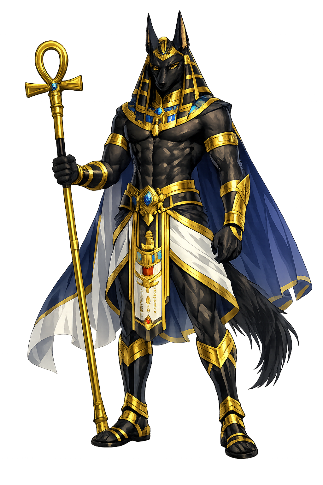

The Authentic Orthography
Mummification, Afterlife, Jackals · The Jackal of the Scales

Unicode restoration and ASCII comparison
𓃢
The name in its original Egyptian form. ꜣnpw (𓃢) is attested in the source tradition — “He who is upon his sacred mountain”. Its Egyptological ain and alef letters carry the full phonetic and orthographic weight of the source tradition.
anubis
Reduced to plain anubis, the name loses everything that made it specific: Egyptological ain and alef letters. What remains is an ASCII string that machines can parse but that no longer speaks with its original voice.
ꜣnpw
The Unicode restoration recovers what ASCII flattened. ꜣnpw restores Egyptological ain and alef letters, returning the name to its original written dignity. The domain encodes to Punycode, but the browser displays the truth.
ꜣnpw.com → xn--npw-lk3l.com
The non-ASCII characters in ꜣnpw are encoded while the ASCII remains visible. To the DNS, it is Punycode. To humanity, it is ꜣnpw.
How ꜣnpw travels from ancient script to the modern URL
Egyptian jnpw; the original vocalisation is unknown. The name is traditionally connected with “he who is upon his sacred mountain" or with a word for “royal child".
How ꜣnpw was spoken
Embalming, the Scales, and the Guiding of Souls
ꜣnpw is the oldest funeral god of Egypt: lord of the necropolis before Osiris ever ruled it, master of embalming, and the steady hand at the scales where every human heart is weighed against a feather. His black jackal watches from the edge of the desert where the dead were always buried.
The desert canid seen at the graves' edge — feared for what it digs, honoured as the grave's defender.
He steadies the scales in the Hall of Two Truths: heart against Maat's feather, exact to the grain.
He wrapped Osiris himself — the first mummy — and every priestly embalmer wore his mask.
"Foremost of the Westerners" — guide of souls through the night roads of the dead.
Stories of ꜣnpw
In the earliest religion ꜣnpw simply is the god of the dead; when the Osiris cycle rose, he was written into it — as embalmer, son, and guide — without ever losing his seniority at the grave.
When Set dismembered Osiris and Isis gathered the pieces, it was ꜣnpw who washed, anointed, and wrapped the god's body — the first mummy, the prototype of every burial thereafter. Egyptian priests performed the rite wearing his jackal mask, and the liturgy addresses the dead as "Osiris," while the hands doing the work are Anubis' own.
The Book of the Dead's spell 125 fixes his most famous office: in the Hall of the Two Truths, ꜣnpw leads the deceased before the scales, steadies the beam as the heart is weighed against Maat's feather of truth, and announces the reading to Thoth, who records it. A heart heavy with lies is thrown to Ammit, the devourer — his is the hand that lets that happen, or prevents it.
Later tradition (Plutarch's On Isis and the Egyptian sources behind it) makes him the son of Osiris and Nephthys, exposed and raised by Isis — a hidden child of the very murder he would spend eternity repairing. Earlier texts give him humbler parentage, sometimes the cow-goddess Hesat: theologies changed, but his place at the grave never did.
His title Wp-w3wt — Wepwawet's title too, "Opener of the Ways" — marks his oldest function: the pathfinder through the Duat. On coffins and tomb walls he leans over the bier, one hand on the wrapped body, not as a threat but as the ferryman: no soul reaches the Field of Reeds without his escort through the dark.
ꜣnpw is the god of careful hands. At the two moments a person is most helpless — the body's unmaking and the heart's examination — he is the one who touches gently and reads honestly. Civilizations are judged, the Egyptians believed, by how they treat the dead; he is the god of that judgment, in both senses.
Enter Extended Lore